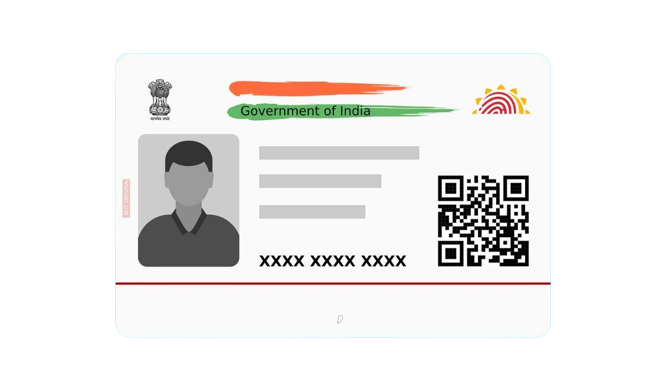
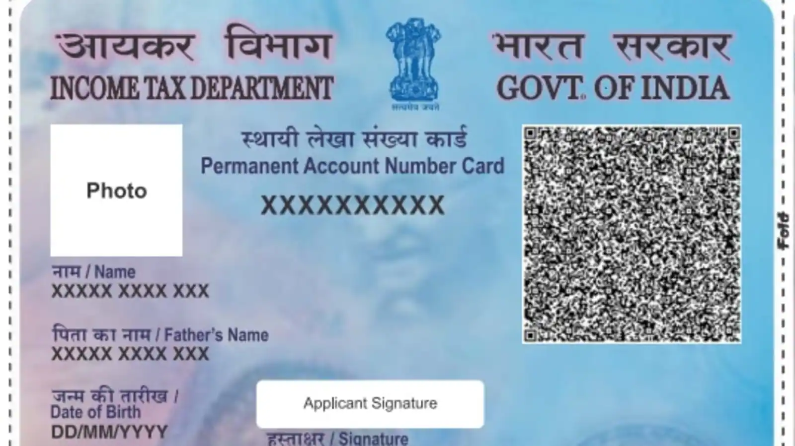

After completing the application form, you must attach copies of the required documents. This list may differ slightly from one bank to the next. According to the requirements of certain banks, you may be required to self-attest the copies of your documents before submitting them. Some of the mandatory documents that must be included in the necessary paperwork are as follows:


- Aadhaar card
- Proof of identity and address – PAN card, driver’s license, and passport
- Form 16 (required only if the individual does not have a PAN card)
- Most recent passport-size photographs